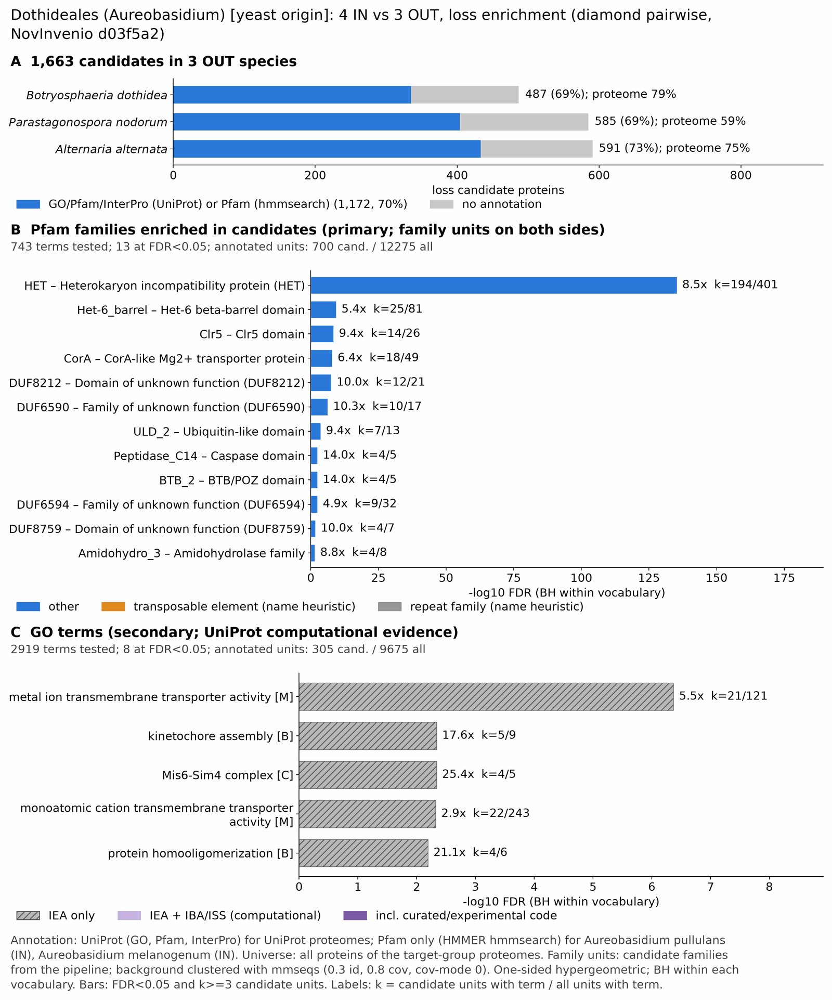

yc dothideales: functional enrichment (loss)
One-sided hypergeometric test per term; Benjamini-Hochberg FDR within each scope, level and vocabulary. Candidates are the loss candidates: gene families present in the OUT group and absent from the IN group. Universe: proteome. Background clustered: True (42348 sequences in 24209 clusters, mmseqs easy-cluster --min-seq-id 0.3 -c 0.8). Family level: one unit per candidate family and per background cluster.
Sources: Pfam: 2026-01-27-Pfam38.2; InterPro entries: 110.0; GO: releases/2026-07-26; analysis generated 2026-10-24T14:34:54. Source tables: /bigdata/stajichlab/jstajich/projects/NovInvenio_Investigations/studies/fungi/yeast_convergence/yc_dothideales/analysis/enrichment/outputs/loss/proteome_clustered.
Full record: PROVENANCE. Run report: report.html.
- Annotation provenance is not fully recorded: PROVENANCE.yaml lists the per-species annotation files and their checksums, but not the UniProt release they come from.
- GO results are secondary. GO annotations include computational evidence (IEA, IBA); the GO evidence column shows if a term has non-IEA support.
- Candidate families (pipeline clustering of candidates) and background clusters (mmseqs clustering of the background proteome) are made by different runs, so family-level counts are not fully comparable.
- Low annotation: the candidate set has less than 50% annotation for GO 26.9%. Enrichment for these vocabularies has low power.
Summary figure

Annotation coverage
Fraction of proteins with at least one term per vocabulary. Universe = all proteins of the species; candidates = the candidate set.
| Species | Set | Proteins | Pfam | Pfam clan | InterPro | GO | Any |
|---|---|---|---|---|---|---|---|
| Botrdoth | universe | 13104 | 73.8% | 60.6% | 79.0% | 63.0% | 79.4% |
| Botrdoth | candidates | 487 | 56.9% | 34.5% | 67.6% | 31.6% | 68.8% |
| Paranodo | universe | 17444 | 53.9% | 43.5% | 58.6% | 41.5% | 58.7% |
| Paranodo | candidates | 585 | 58.6% | 34.0% | 68.7% | 24.6% | 69.1% |
| Altealte | universe | 13463 | 69.6% | 56.2% | 74.5% | 57.8% | 74.8% |
| Altealte | candidates | 591 | 64.0% | 33.0% | 71.7% | 25.4% | 73.3% |
| ALL_OUT | universe | 44011 | 64.6% | 52.5% | 69.5% | 52.9% | 69.8% |
| ALL_OUT | candidates | 1663 | 60.0% | 33.8% | 69.5% | 26.9% | 70.5% |
Tests summary
Per vocabulary: terms with FDR < 0.05 / terms tested. Protein level counts proteins; family level counts candidate families and background clusters.
| Scope | Level | Cand. units | Pfam sig / tested | Pfam clan sig / tested | InterPro sig / tested | GO sig / tested |
|---|---|---|---|---|---|---|
| whole_set | family | 1168 | 13 / 743 | 3 / 308 | 15 / 1583 | 8 / 2919 |
| whole_set | protein | 1663 | 58 / 1739 | 23 / 422 | 86 / 3784 | 56 / 4142 |
| Altealte | family | 547 | 6 / 412 | 2 / 257 | 7 / 963 | 1 / 2529 |
| Altealte | protein | 591 | 7 / 519 | 2 / 270 | 7 / 1213 | 2 / 2693 |
| Botrdoth | family | 457 | 5 / 454 | 1 / 261 | 4 / 1018 | 3 / 2204 |
| Botrdoth | protein | 487 | 11 / 571 | 2 / 271 | 12 / 1307 | 3 / 2380 |
| Paranodo | family | 566 | 8 / 420 | 3 / 252 | 7 / 984 | 4 / 1691 |
| Paranodo | protein | 585 | 6 / 519 | 3 / 264 | 7 / 1228 | 6 / 1812 |
Top 25 Pfam terms (whole set, family level)
25 rows shown, ordered by FDR then p-value; 13 have FDR < 0.05 (bold).
| Term | Name | k / N cand. | n / M bg | Fold | FDR (BH) |
|---|---|---|---|---|---|
| PF06985 | HET: Heterokaryon incompatibility protein (HET) | 194 / 700 | 401 / 12275 | 8.484 | 5.19e-136 |
| PF26639 | Het-6_barrel: Het-6 beta-barrel domain | 25 / 700 | 81 / 12275 | 5.412 | 4.91e-10 |
| PF14420 | Clr5: Clr5 domain | 14 / 700 | 26 / 12275 | 9.442 | 4.28e-09 |
| PF01544 | CorA: CorA-like Mg2+ transporter protein | 18 / 700 | 49 / 12275 | 6.442 | 1.33e-08 |
| PF26640 | DUF8212: Domain of unknown function (DUF8212) | 12 / 700 | 21 / 12275 | 10.02 | 2.93e-08 |
| PF20233 | DUF6590: Family of unknown function (DUF6590) | 10 / 700 | 17 / 12275 | 10.315 | 5.71e-07 |
| PF22893 | ULD_2: Ubiquitin-like domain | 7 / 700 | 13 / 12275 | 9.442 | 2.56e-04 |
| PF00656 | Peptidase_C14: Caspase domain | 4 / 700 | 5 / 12275 | 14.029 | 0.004 |
| PF02214 | BTB_2: BTB/POZ domain | 4 / 700 | 5 / 12275 | 14.029 | 0.004 |
| PF20237 | DUF6594: Family of unknown function (DUF6594) | 9 / 700 | 32 / 12275 | 4.932 | 0.004 |
| PF30922 | DUF8759: Domain of unknown function (DUF8759) | 4 / 700 | 7 / 12275 | 10.02 | 0.022 |
| PF07969 | Amidohydro_3: Amidohydrolase family | 4 / 700 | 8 / 12275 | 8.768 | 0.035 |
| PF17109 | Goodbye: fungal STAND N-terminal Goodbye domain | 4 / 700 | 8 / 12275 | 8.768 | 0.035 |
| PF01764 | Lipase_3: Lipase (class 3) | 4 / 700 | 9 / 12275 | 7.794 | 0.056 |
| PF04681 | Bys1: Blastomyces yeast-phase-specific protein | 5 / 700 | 16 / 12275 | 5.48 | 0.074 |
| PF07366 | SnoaL: SnoaL-like polyketide cyclase | 3 / 700 | 5 / 12275 | 10.521 | 0.074 |
| PF27672 | CLU5d_C: CLU5d C-terminal domain | 3 / 700 | 5 / 12275 | 10.521 | 0.074 |
| PF04055 | Radical_SAM: Radical SAM superfamily | 4 / 700 | 11 / 12275 | 6.377 | 0.103 |
| PF28510 | DUF8419: Domain of unknown function (DUF8419) | 5 / 700 | 18 / 12275 | 4.871 | 0.107 |
| PF25411 | DUF7888: Domain of unknown function (DUF7888) | 3 / 700 | 6 / 12275 | 8.768 | 0.115 |
| PF28613 | HAC6_helical: HAC6 small helical domain | 3 / 700 | 6 / 12275 | 8.768 | 0.115 |
| PF24864 | DUF7730: Domain of unknown function (DUF7730) | 9 / 700 | 61 / 12275 | 2.587 | 0.247 |
| PF06140 | Ifi-6-16: Interferon-induced 6-16 family | 3 / 700 | 8 / 12275 | 6.576 | 0.269 |
| PF19086 | Terpene_syn_C_2: Terpene synthase family 2, C-terminal metal binding | 4 / 700 | 16 / 12275 | 4.384 | 0.341 |
| PF00190 | Cupin_1: Cupin | 3 / 700 | 9 / 12275 | 5.845 | 0.342 |
Top 25 InterPro terms (whole set, family level)
25 rows shown, ordered by FDR then p-value; 15 have FDR < 0.05 (bold).
| Term | Name | k / N cand. | n / M bg | Fold | FDR (BH) |
|---|---|---|---|---|---|
| IPR010730 | Domain:Heterokaryon incompatibility | 194 / 811 | 401 / 13644 | 8.139 | 1.06e-130 |
| IPR052895 | Family:Heterokaryon incompatibility protein 6 | 54 / 811 | 196 / 13644 | 4.635 | 2.46e-19 |
| IPR025676 | Domain:Clr5 domain | 14 / 811 | 26 / 13644 | 9.059 | 1.30e-08 |
| IPR045863 | Homologous_superfamily:CorA, transmembrane region | 19 / 811 | 51 / 13644 | 6.268 | 1.30e-08 |
| IPR002523 | Family:Mg2+ transporter protein, CorA-like/Zinc transport protein ZntB | 18 / 811 | 49 / 13644 | 6.18 | 4.54e-08 |
| IPR058525 | Domain:Domain of unknown function DUF8212 | 12 / 811 | 21 / 13644 | 9.614 | 8.47e-08 |
| IPR046497 | Domain:Domain of unknown function DUF6590 | 10 / 811 | 17 / 13644 | 9.896 | 1.57e-06 |
| IPR054464 | Domain:Ubiquitin-like domain, fungal | 7 / 811 | 13 / 13644 | 9.059 | 6.33e-04 |
| IPR003131 | Domain:Potassium channel tetramerisation-type BTB domain | 4 / 811 | 5 / 13644 | 13.459 | 0.009 |
| IPR011600 | Domain:Peptidase C14, caspase domain | 4 / 811 | 5 / 13644 | 13.459 | 0.009 |
| IPR046529 | Domain:Domain of unknown function DUF6594 | 9 / 811 | 32 / 13644 | 4.732 | 0.010 |
| IPR052999 | Family:Peroxisomal Targeting Signal 1 Protein | 4 / 811 | 6 / 13644 | 11.216 | 0.022 |
| IPR050829 | Family:CorA Metal Ion Transporter | 4 / 811 | 7 / 13644 | 9.614 | 0.042 |
| IPR061820 | Domain:Domain of unknown function DUF8759 | 4 / 811 | 7 / 13644 | 9.614 | 0.042 |
| IPR029032 | Homologous_superfamily:AhpD-like | 5 / 811 | 12 / 13644 | 7.01 | 0.043 |
| IPR013108 | Domain:Amidohydrolase 3 | 4 / 811 | 8 / 13644 | 8.412 | 0.067 |
| IPR031350 | Domain:Fungal STAND N-terminal Goodbye domain | 4 / 811 | 8 / 13644 | 8.412 | 0.067 |
| IPR050745 | Family:Multifunctional regulatory proteins | 5 / 811 | 14 / 13644 | 6.008 | 0.082 |
| IPR002921 | Domain:Fungal lipase-type domain | 4 / 811 | 9 / 13644 | 7.477 | 0.102 |
| IPR006771 | Family:Secreted thaumatin-like protein cetA-like | 5 / 811 | 16 / 13644 | 5.257 | 0.138 |
| IPR032382 | Domain:Alternaria alternata allergen 1-like | 3 / 811 | 5 / 13644 | 10.094 | 0.138 |
| IPR060484 | Domain:CLU5d, C-terminal domain | 3 / 811 | 5 / 13644 | 10.094 | 0.138 |
| IPR059463 | Family:Protein of unknown function DUF8419 | 5 / 811 | 18 / 13644 | 4.673 | 0.214 |
| IPR036770 | Homologous_superfamily:Ankyrin repeat-containing domain superfamily | 25 / 811 | 235 / 13644 | 1.79 | 0.214 |
| IPR009959 | Family:Polyketide cyclase SnoaL-like | 3 / 811 | 6 / 13644 | 8.412 | 0.214 |
Top 15 GO terms (whole set, family level) — secondary, computational evidence (IEA/IBA) included
15 rows shown, ordered by FDR then p-value; 8 have FDR < 0.05 (bold).
| Term | Name | k / N cand. | n / M bg | Fold | FDR (BH) | GO evidence | Families with non-IEA |
|---|---|---|---|---|---|---|---|
| GO:0046873 | molecular_function:metal ion transmembrane transporter activity | 21 / 305 | 121 / 9675 | 5.505 | 4.28e-07 | IEA_only | 0 |
| GO:0051382 | biological_process:kinetochore assembly | 5 / 305 | 9 / 9675 | 17.623 | 0.005 | IEA_only | 0 |
| GO:0031511 | cellular_component:Mis6-Sim4 complex | 4 / 305 | 5 / 9675 | 25.377 | 0.005 | IEA_only | 0 |
| GO:0051383 | biological_process:kinetochore organization | 5 / 305 | 10 / 9675 | 15.861 | 0.005 | IEA_only | 0 |
| GO:0008324 | molecular_function:monoatomic cation transmembrane transporter activity | 22 / 305 | 243 / 9675 | 2.872 | 0.005 | IEA_only | 0 |
| GO:0051260 | biological_process:protein homooligomerization | 4 / 305 | 6 / 9675 | 21.148 | 0.006 | IEA_only | 0 |
| GO:0015075 | molecular_function:monoatomic ion transmembrane transporter activity | 22 / 305 | 253 / 9675 | 2.758 | 0.006 | IEA_only | 0 |
| GO:0051259 | biological_process:protein complex oligomerization | 4 / 305 | 8 / 9675 | 15.861 | 0.022 | IEA_only | 0 |
| GO:0007059 | biological_process:chromosome segregation | 6 / 305 | 33 / 9675 | 5.768 | 0.164 | IEA_only | 0 |
| GO:0000776 | cellular_component:kinetochore | 5 / 305 | 27 / 9675 | 5.874 | 0.401 | IEA_only | 0 |
| GO:0004197 | molecular_function:cysteine-type endopeptidase activity | 4 / 305 | 17 / 9675 | 7.464 | 0.442 | IEA_only | 0 |
| GO:0005886 | cellular_component:plasma membrane | 25 / 305 | 425 / 9675 | 1.866 | 0.477 | IEA_only | 0 |
| GO:0016886 | molecular_function:ligase activity, forming phosphoric ester bonds | 3 / 305 | 9 / 9675 | 10.574 | 0.508 | IEA_only | 0 |
| GO:0010333 | molecular_function:terpene synthase activity | 3 / 305 | 10 / 9675 | 9.516 | 0.658 | IEA_only | 0 |
| GO:0000976 | molecular_function:transcription cis-regulatory region binding | 16 / 305 | 241 / 9675 | 2.106 | 0.727 | IEA_only | 0 |
Actin cytoskeleton controls
Known actin-related families and how many of their proteins pass each filter. Protein ID columns are left out.
| control | pfam_ids | desc_regex | OUT_universe | OUT_in_matrix | OUT_pass_outgroup_rule | candidates | near_miss_in1 | near_miss_in2 | n_Botrdoth | n_Paranodo | n_Altealte | n_Aurepull | n_Auremela | n_Aurenami | n_Auresubg |
|---|---|---|---|---|---|---|---|---|---|---|---|---|---|---|---|
| Arp2/3 ARPC2 (P34-Arc) | PF04045 | 3 | 3 | 3 | 0 | 0 | 0 | 1 | 1 | 1 | 1 | 1 | 1 | 1 | |
| Arp2/3 ARPC3 (P21-Arc) | PF04062 | 3 | 3 | 3 | 0 | 0 | 0 | 1 | 1 | 1 | 1 | 1 | 1 | 1 | |
| Arp2/3 ARPC4 | PF05856 | 3 | 3 | 3 | 0 | 0 | 0 | 1 | 1 | 1 | 1 | 1 | 1 | 1 | |
| Arp2/3 ARPC5 (P16-Arc) | PF04699 | 3 | 3 | 3 | 0 | 0 | 0 | 1 | 1 | 1 | 1 | 1 | 1 | 1 | |
| Arp2/3 ARPC1 (description only) | arp2/3 complex.*(41|p41|subunit 1)|ARPC1 | 0 | 0 | 0 | 0 | 0 | 0 | 0 | 0 | 0 | 0 | 0 | 0 | 0 | |
| Arp2 / Arp3 (description only) | actin-related protein (2|3)\b|\bARP[23]\b | 18 | 17 | 17 | 0 | 0 | 0 | 7 | 6 | 5 | 4 | 4 | 6 | 7 | |
| WAVE complex NCKAP1 | PF09735 | 0 | 0 | 0 | 0 | 0 | 0 | 0 | 0 | 0 | 0 | 0 | 0 | 0 | |
| WAVE complex CYFIP (FragX_IP) | PF05994 | 0 | 0 | 0 | 0 | 0 | 0 | 0 | 0 | 0 | 0 | 0 | 0 | 0 | |
| WAVE complex ABI | PF07815|PF27594 | 0 | 0 | 0 | 0 | 0 | 0 | 0 | 0 | 0 | 0 | 0 | 0 | 0 | |
| SCAR/WAVE (SCAR_helical) | PF27569 | 0 | 0 | 0 | 0 | 0 | 0 | 0 | 0 | 0 | 0 | 0 | 0 | 0 | |
| WASP family (WH1) | PF00568 | 3 | 3 | 3 | 0 | 0 | 0 | 1 | 1 | 1 | 1 | 1 | 1 | 1 | |
| WH2 motif (WASP, WAVE, others) | PF02205 | 8 | 8 | 8 | 0 | 0 | 0 | 3 | 2 | 3 | 2 | 2 | 3 | 3 | |
| Formin FH2 | PF02181 | 3 | 3 | 3 | 0 | 0 | 0 | 1 | 1 | 1 | 1 | 1 | 1 | 1 | |
| Formin Drf_GBD / Drf_FH3 / Drf_DAD | PF06371|PF06367|PF06345 | 6 | 6 | 6 | 0 | 0 | 0 | 2 | 2 | 2 | 2 | 2 | 2 | 2 | |
| Ena/VASP (VASP_tetra) | PF08776 | 0 | 0 | 0 | 0 | 0 | 0 | 0 | 0 | 0 | 0 | 0 | 0 | 0 | |
| Coronin (description only) | coronin | 3 | 3 | 3 | 0 | 0 | 0 | 1 | 1 | 1 | 1 | 0 | 1 | 1 | |
| Cortactin (HS1_rep) | PF02218 | 0 | 0 | 0 | 0 | 0 | 0 | 0 | 0 | 0 | 0 | 0 | 0 | 0 | |
| Myosin 2 tail (Myosin_tail_1) | PF01576 | 0 | 0 | 0 | 0 | 0 | 0 | 0 | 0 | 0 | 0 | 0 | 0 | 0 | |
| Myosin head (all myosins) | PF00063 | 11 | 11 | 11 | 0 | 0 | 0 | 4 | 4 | 3 | 4 | 4 | 4 | 4 |
Page written by bin/generate_enrichment_page.py.